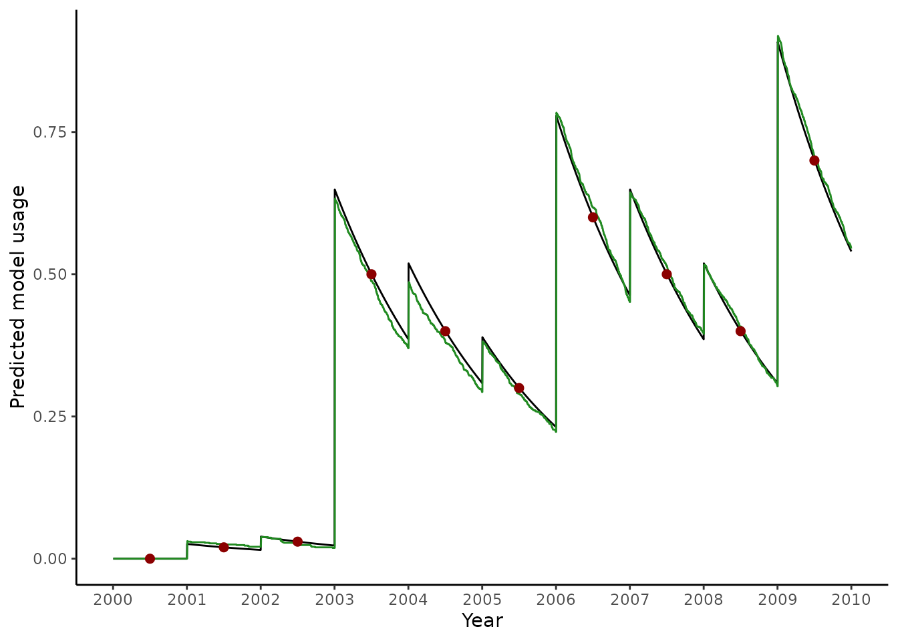

Bed nets in malariasimulation
malariasimulation.RmdIn malariasimulation we can implement the bed net intervention by specifying the % of the population who are distributed a bed net (and assumed to use it) at given time points.
We often want to match malariasimulation distributions so that they result in and observed time-series of usage that we have data for. The netz package can help us to do this.
# Create some example usage data
data <- data.frame(
year = 2000:2009,
usage = c(0, 0.02, 0.03, 0.5, 0.4, 0.3, 0.6, 0.5, 0.4, 0.7)
)
# Estimate the model inputs to achieve the observed usage
## We assume that
## Usage is measured at the mid point of the year
## Distributions occur at the start of the year
data$model_input <- usage_to_model_distribution(
usage = data$usage,
usage_timesteps = (data$year - 2000) * 365 + 1 + (365 / 2),
distribution_timesteps = (data$year - 2000) * 365 + 1,
mean_retention = 700
)
# Estimate model usage over time to validate
pred <- data.frame(
t <- 1:(365 * 10)
)
pred$model_usage <- model_distribution_to_usage(
usage_timesteps = pred$t,
distribution = data$model_input,
distribution_timesteps = (data$year - 2000) * 365 + 1,
mean_retention = 700
)
# Validate with usage outputs from a malariasimulation run
set.seed(123)
year <- 365
sim_length <- 10 * year
human_population <- 1000
starting_EIR <- 1
simparams <- get_parameters(
list(human_population = human_population)
) |>
set_equilibrium(init_EIR = starting_EIR) |>
set_bednets(
timesteps = (data$year - 2000) * 365 + 1,
coverages = data$model_input,
retention = 700,
dn0 = matrix(rep(0.533, 10), nrow = 10, ncol = 1),
rn = matrix(rep(0.56, 10), nrow = 10, ncol = 1),
rnm = matrix(rep(0.24, 10), nrow = 10, ncol = 1),
gamman = rep(2.64 * 365, 10)
)
validate <- run_simulation(timesteps = sim_length, parameters = simparams)
validate$model_use <- validate$n_use_net / simparams$human_population
ggplot() +
geom_line(
data = pred,
aes(x = 2000 + (t / 365), y = model_usage)
) +
geom_line(
data = validate,
aes(x = 2000 + (timestep / 365), y = model_use),
col = "forestgreen"
) +
geom_point(
data = data,
aes(x = year + 0.5, y = usage),
col = "darkred",
size = 2
) +
ylab("Predicted model usage") +
xlab("Year") +
scale_x_continuous(breaks = 2000:2010) +
theme_classic()
In some cases, the function may struggle to fit the usage observations well. This may especially be the case if we are uncertain about bed net parameters, such as the rate of net loss, or if early data points are spurious.
Please note, that in these functions we always use the
net_loss_exp() net retention function, as this aligns with
the internal implementation in malariasimulation.
These function assumed random correlation between recipients.